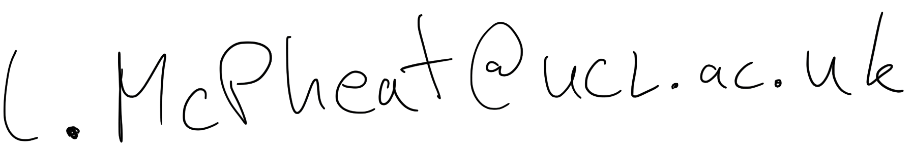

I am a PhD student at the PPLV in UCL Computer Science, supervised by Mehrnoosh Sadrzadeh.
I model discourse using distributional-compositional semantics. At the moment, I am looking at how to describe coreference with DisCoCat. So far this involves defining categorical interpretations of variants of Lambek Calculus with modalities which resolve coreference syntactically, and experimenting with the semantics of this resolution using a variety of composition and language models.
Broader research interests include: QNLP, Distributional-Compositional Semantics Categorical Semantics, Category Theory, Topos Theory, Coalgebra, Computational Linguistics, NLP.
Contact me by email at 